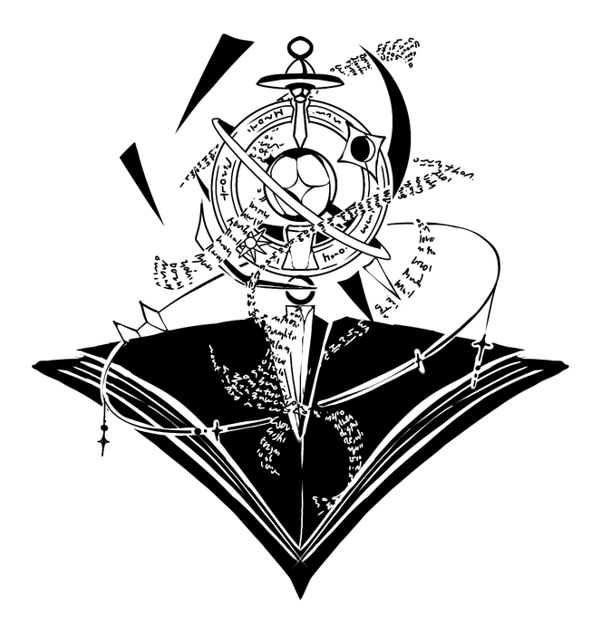

Planeswalkers
Arcana of UpheavalEvery spell 🧙 begins with intention. Let your ingenuity weave triumph 🏆, and may your hands create what others deem impossible.
Eight Cards, Chosen
8 Houses chosen by the Arcane, only one shall remain gilded.
Every spell 🧙 begins with intention. Let your ingenuity weave triumph 🏆, and may your hands create what others deem impossible.
Brimming with potential 🌟, come forth! A new Star to complete thy divination 🔮. Believe in the path 🛣️ before you, and let optimism guide every step.
The throne is not inherited — it is earned 👑. As Emperor, you must stand firm before every trial ⚖️, and let your resolve become the foundation upon which victory is built 🏰.
The stars 💫 have woven your paths together. May your choices be guided by trust 🤝, and your courage by compassion 💗. The Lover’s path will find you.
The Chariot and the road ahead belongs to the determined ⚔️. Let your ambition push you forward ❤️🔥, for triumph favors those who never cease moving. Ride with the winds.

The lantern🏮you bear will lead you to victory. Trust your insight, dear Hermit 💫, and let knowledge become your greatest strength 💪.
The Fool, the first step is yours to take 💫. Though the road ahead is unknown, every great tale begins with a leap of faith 🍀. Walk boldly, for the Arcana favors those unafraid to begin 🔆
You have inherited the Sun’s fire ❤️🔥. Burn brightly 🔆 so you may illuminate your path ahead, but too much and it might cost you more ⚱️.